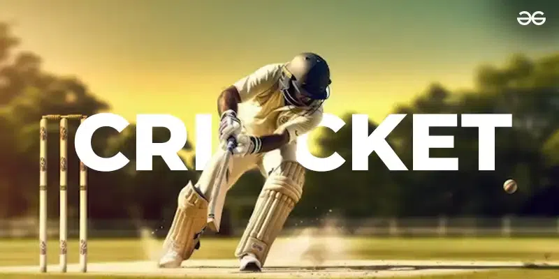

2. Cricket

Cricket is an exciting and fast-paced sport with a long history. It started back in the 13th century when it was first played on village greens and fields in England.
Today, cricket is especially popular in Australia and the United Kingdom, but people of all ages around the world enjoy playing in leagues and tournaments.
With an estimated fan base of 2.5 billion people, this sport is widely popular in India, Pakistan, and Australia.
The sport has a large popularity in Asia, Australia, and the United Kingdom, with the International Cricket Council (ICC) recognizing 125 countries that play cricket.
Cricket's unique combination of history and excitement has made it a cultural icon in many regions of the world.
- Estimated fans: 2.5 billion.
- Regional popularity: Asia, Australia, and the United Kingdom.
- A popular sport with large followings in India, Pakistan, and Australia.
- The International Cricket Council (ICC) lists 125 countries that participate in cricket.